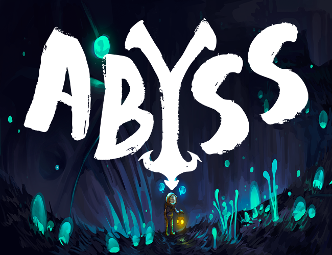
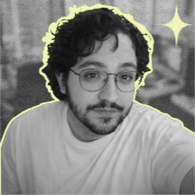
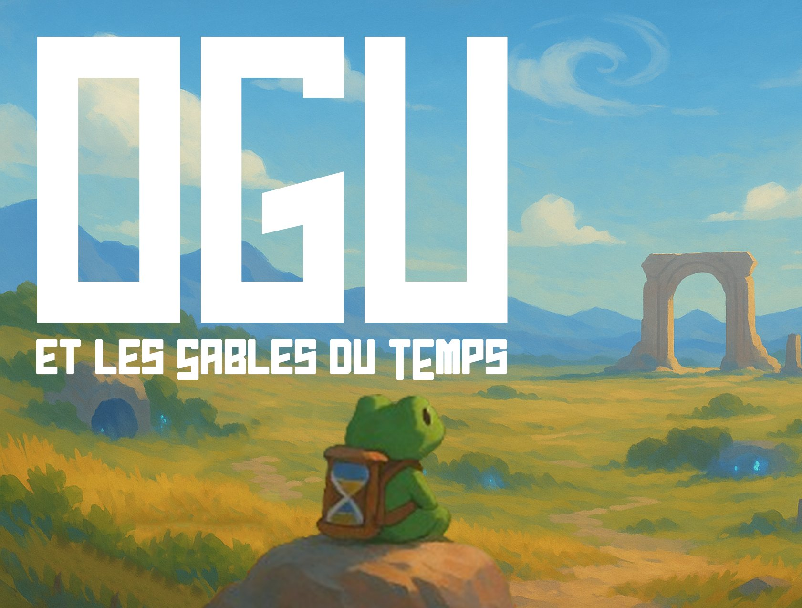
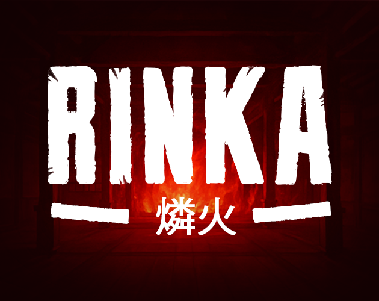
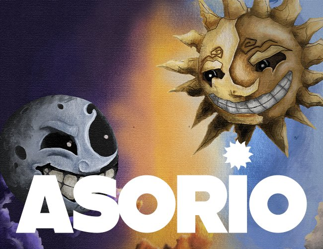
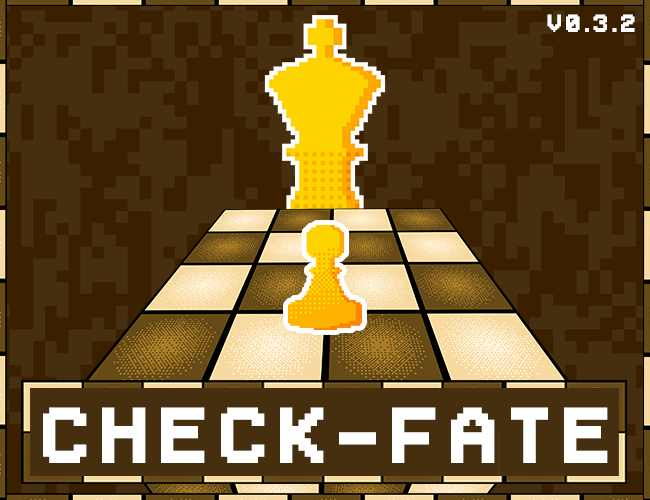
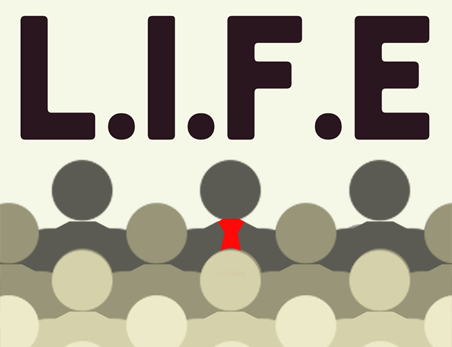
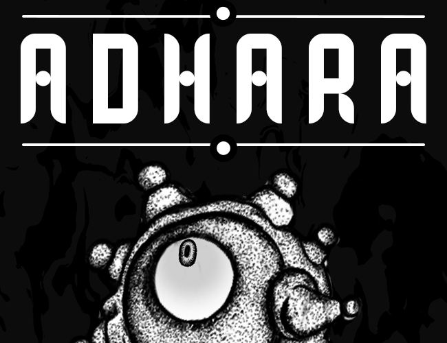
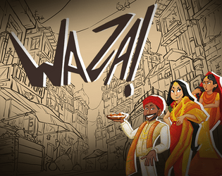

Game Jam · 48h GD2ABYSS
Direction artistique et encadrement d'une équipe de 7 artistes lors d'une game jam 48h sur le thème "sous pression". Création d'une identité visuelle cohérente en environnement contraint.
Je conçois des expériences qui donnent du sens au jeu.
Étudiant en game design, passionné de narration et de storytelling.

À propos
Je m'appelle Hugo Rivals, alias H33O, game designer de 26 ans, en 3ème année à Brassart Aix-en-Provence. Avant le game design, j'ai exercé une dizaine de métiers : vendeur, cuisinier, animateur, menuisier. Cette polyvalence nourrit directement ma façon de concevoir des jeux.
Depuis tout petit, j'ai toujours aimé créer des univers et raconter des histoires. Très vite, je me suis mis à dessiner, puis à créer des jeux de rôle au collège, avec toujours la même idée en tête : construire des mondes dans lesquels le joueur puisse s'évader.
Je suis à l'aise sur tout type de projet, car j'adore découvrir de nouveaux systèmes et de nouvelles façons d'envisager le jeu vidéo, même si je reste avant tout passionné par le level design, le narrative design, l'UI/UX et le design en général, ainsi que le management de projet.
Je cherche constamment à me confronter à des univers que je ne maîtrise pas encore. Ma curiosité et ma capacité d'apprentissage me poussent à explorer de nouvelles idées et à considérer chaque projet comme une opportunité d'évolution.
Enfin, je suis quelqu'un de très sociable, qui s'intègre facilement, aussi efficace en autonomie que dans des environnements collaboratifs, y compris au sein d'équipes de grande taille.
Mes projets

Game Jam · 48h GD2Direction artistique et encadrement d'une équipe de 7 artistes lors d'une game jam 48h sur le thème "sous pression". Création d'une identité visuelle cohérente en environnement contraint.

Projet d'étude · 1 mois GD1Chef de projet sur une production d'un mois avec une équipe de 4 game designers. Organisation du travail, suivi de production et coordination du design.

Game Jam · 48h GD2Co-conception d'un jeu en réalité virtuelle en 48h autour du thème "ombre chinoise". Première exploration du médium VR et de ses contraintes interactives.

Projet d'étude · 4 semaines GD2Direction artistique en collaboration avec une équipe de 10 artistes 3D. Mise en place et maintien d'une cohérence visuelle globale sur l'ensemble du projet.

Projet d'étude · 1 mois GD2Projet d'école mobile inspiré des jeux Game & Watch, réalisé en un mois. J'ai codé l'intégralité du jeu et réalisé tous les sprites moi-même.

Projet d'étude · 1 mois GD2Jeu mobile inspiré du film Brazil (1986) : une critique bureaucratique déguisée en puzzle arcade, où l'on trie des documents selon des règles de plus en plus absurdes et complexes.

Game Jam · 7 jours GD2Réalisé à deux en 7 jours pour la jam "Do You Wanna Jam ?" sur le thème "instable". On y incarne un être astral dévoreur de mondes, qui finit par mettre en danger tous les systèmes solaires.

Projet d'étude · 9 jours GD1Version imprimable d'un jeu de société créé en 9 jours sur le thème de l'Inde. À l'aide d'un tetris en 4 dimensions, il faut remplir une cassolette d'ingrédients pour composer des recettes de cuisine indienne, en confrontation avec un autre joueur.
Outils maîtrisés
Retouche photo, UI, visuels de jeux et compositing pour projets de game design.
Prototypage de niveaux, blueprints visuels, éclairage et atmosphère.
Développement de prototypes, jeux VR, scripting C# et gestion de scènes.
Modélisation 3D low-poly, assets pour jeux et rendu pour DA de projets.
Création de sprites pixel art, animations frame-by-frame pour jeux 2D.
Game Design Documents, user flows, brainstorming et gestion de projet collaboratif.
Mon podcast
J'ai toujours été quelqu'un de curieux, et cette curiosité m'a poussé à m'entourer de gens plus expérimentés que moi pour apprendre à leur contact. GameView est né de cette envie d'aller à la rencontre de personnes déjà présentes dans le milieu du jeu vidéo, pour recueillir leurs connaissances et leurs expériences, et les partager avec celles et ceux qui veulent, à leur tour, découvrir ce milieu.
Une suite d'interviews de personnes dont le métier gravite autour du jeu vidéo, par des passionnés, pour des passionnés. Écouter sur Spotify →
Le prochain épisode de GameView arrive bientôt !